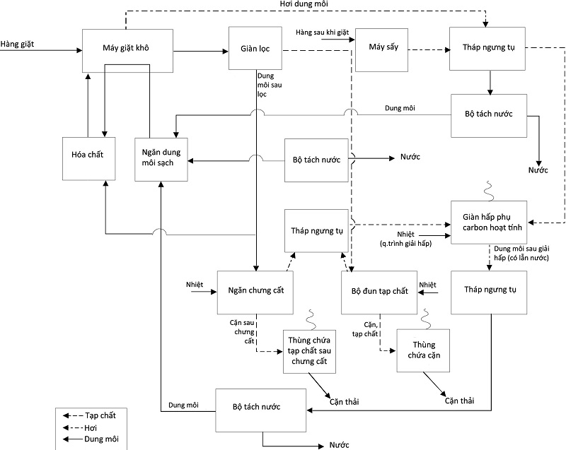

Giặt khô là gì? Những loại quần áo nào cần phải giặt khô
Giặt khô trong một vài năm trở lại đây được nhiều người lựa chọn. Tuy nhiên, nhiều người vẫn chưa hiểu rõ về giặt khô là như thế nào? Quy trình giặt khô ra sao và những loại quần áo nào nên giặt khô? Bài viết dưới đây sẽ giải đáp mọi thắc mắc của bạn.
Giặt khô là gì?
Giặt khô là quá trình trình sử dụng hóa chất dung môi khác so với nước để làm sạch quần á và sợi dệt may. Dung môi thường được sử dụng thường là tetrachloroethylene ( perchloroethylene ), trong ngành công nghiệp gọi là " perc " hoặc " PERC " hoặc dung môi gốc muối hữu cơ Hydrocacbon. Nó được sử dụng để làm sạch các loại vải tinh tế mà máy giặt và sấy thông thường không làm được.
Giặt khô liệu có sạch không?
Giặt quần áo không cần nước thì liệu chúng có thật sự sạch không? Khi nói đến việc giặt khô nhiều chị em đều băn khoăn liệu giặt khô có đánh bật được các vết bẩn. Dưới tác động của hóa chất các vết bẩn cứng đầu nhất cũng phải chịu thua. Giặt khô giúp quần áo giặt sạch hơn rất nhiều so với cách giặt thông thường. Tuy nhiên, nhiều lời khuyên rằng chúng ta không nên giặt khô để tránh tác động của hóa chất ảnh hưởng đến sức khỏe. Bạn chỉ nên giặt khô quần áo trong một số trường hợp chất liệu vải cần thiết phải giặt khô.
Vì sao phải giặt khô?
Giặt khô từ lâu đã trở thành 1 phương pháp giặt thay thế cho giặt nước đối với một số loại đồ giặt, có rất nhiều nguyên nhân để quần áo phải giặt khô trong đó có một số nguyên nhân chính như sau:
Loại vải nhạy cảm với nước:
Có một số loại đồ vải rất nhạy cảm với nước nghĩa là không thể chịu được điều kiện giặt máy thông thường. Với những loại chất liệu này nhất thiết phải giặt khô hoặc không phải được giặt tay nhẹ nhàng với loại hóa chất đặc biệt không chưa xút và các loại chất tẩy.
Phai màu lên đồ trắng là ác mộng khi giặt tẩy, nguyên nhân của sự phai màu này chính là một số loại quần áo được lên màu bằng các loại chất nhuộm gốc nước sẽ rất dễ bị phai trong nước và bám lên những bề mặt vải sáng màu, tuy nhưng những chất nhuộm này lại khá bền khi giặt trong dung môi giặt khô và giúp quần áo giặt khô ít bị bạc.
Vấn đề co-rút vải
Một số loại chất liệu chứa các sợi được làm từ lông hoặc sợi gốc động vật như len, tơ tằm..do cấu trúc sợi vải nên khi giặt trong nước sẽ dễ bị co, rút hoặc dão và nhăn.
Chất lượng đồ giặt
Giặt khô mang đến sự hoàn hảo cho chất liệu vải và giúp giữ chất lượng và hình dáng đồ giặt như ban đầu. Trong thực tế để tạo kiểu dáng, giữ nếp và độ cứng của các loại quần áo mới, người ta thường phủ một lớp “hồ” đặc biệt , tuy nhiên khi giặt nước những lớp “hồ” này thường bị hòa tan trong nước làm mất đi kiểu dáng ban đầu và theo đó dần dần làm mất đi form dáng quần áo. Điều này rất ít khi xảy ra khi giặt khô. Giặt khô giúp bảo toàn quần áo như ban đầu và đặc biệt giữ bền màu sắc lâu hơn.
Loại vải nhạy cảm với nước:
Có một số loại đồ vải rất nhạy cảm với nước nghĩa là không thể chịu được điều kiện giặt máy thông thường. Với những loại chất liệu này nhất thiết phải giặt khô hoặc không phải được giặt tay nhẹ nhàng với loại hóa chất đặc biệt không chưa xút và các loại chất tẩy.
Phai màu lên đồ trắng là ác mộng khi giặt tẩy, nguyên nhân của sự phai màu này chính là một số loại quần áo được lên màu bằng các loại chất nhuộm gốc nước sẽ rất dễ bị phai trong nước và bám lên những bề mặt vải sáng màu, tuy nhưng những chất nhuộm này lại khá bền khi giặt trong dung môi giặt khô và giúp quần áo giặt khô ít bị bạc.
Vấn đề co-rút vải
Một số loại chất liệu chứa các sợi được làm từ lông hoặc sợi gốc động vật như len, tơ tằm..do cấu trúc sợi vải nên khi giặt trong nước sẽ dễ bị co, rút hoặc dão và nhăn.
Chất lượng đồ giặt
Giặt khô mang đến sự hoàn hảo cho chất liệu vải và giúp giữ chất lượng và hình dáng đồ giặt như ban đầu. Trong thực tế để tạo kiểu dáng, giữ nếp và độ cứng của các loại quần áo mới, người ta thường phủ một lớp “hồ” đặc biệt , tuy nhiên khi giặt nước những lớp “hồ” này thường bị hòa tan trong nước làm mất đi kiểu dáng ban đầu và theo đó dần dần làm mất đi form dáng quần áo. Điều này rất ít khi xảy ra khi giặt khô. Giặt khô giúp bảo toàn quần áo như ban đầu và đặc biệt giữ bền màu sắc lâu hơn.
Vậy những loại quần áo nào nên giặt khô?
Một số loại quần áo bạn nên sử dụng phương pháp giặt khô như: Các loại áo khoắc da, quần áo dạ, quần áo lông vũ,..Tuy nhiên bạn không nên chọn mua những quần áo chỉ giặt khô hãy tham khảo những phương pháp giặt thay cho giặt khô để đảm bảo sức khỏe cho bạn gia đình.
Quy trình giặt khô như thế nào?
Quy trình hoạt động của thiết bị giặt khô Perc bao gồm 2 phần: Đường đi của đồ giặt và đường đi của dung môi. Do đặc thù loại hình giặt này là giặt trong loại dung môi đặc biệt có khả năng thu hồi, nên dung môi trong thiết bị giặt khô luôn được tuần hoàn một mặt tiết kiệm chi phí nhưng mặt khác là bảo vệ môi trường.
Đường đi của đồ giặt: Cơ bản giống như giặt ướt, đồ giặt được đưa vào thiết bị, thiết bị tự động cấp dung môi và đưa bơm hóa chất vào lồng giặt. Quá trình giặt được vận hành tự động các công đoạn giặt, xả và vắt khô. Đồ giặt sau đó được tiếp tục sấy trong thiết bị trước khi đưa ra ngoài để là, ép, thổi form và đóng gói.
Đường đi của dung môi: Sơ đồ dòng mô tả quá trình cấp, tuần hoàn của dung môi trong máy giặt khô công nghiệp được dẫn ra theo hình dưới đây:
Đường đi của đồ giặt: Cơ bản giống như giặt ướt, đồ giặt được đưa vào thiết bị, thiết bị tự động cấp dung môi và đưa bơm hóa chất vào lồng giặt. Quá trình giặt được vận hành tự động các công đoạn giặt, xả và vắt khô. Đồ giặt sau đó được tiếp tục sấy trong thiết bị trước khi đưa ra ngoài để là, ép, thổi form và đóng gói.
Đường đi của dung môi: Sơ đồ dòng mô tả quá trình cấp, tuần hoàn của dung môi trong máy giặt khô công nghiệp được dẫn ra theo hình dưới đây:

Giặt khô là một trong những phương pháp tẩy tiên tiến và hiện đại hiện nay. Quy trình giặt tẩy này mang lại rất nhiều lợi ích cho một số loại đồ vải nhất định. Hơn nữa, nó còn giúp bảo vệ và nâng cao tuổi thọ của quần áo, giúp đồ giặt tránh được một số yếu tố có hại như phai màu, bạc vải….